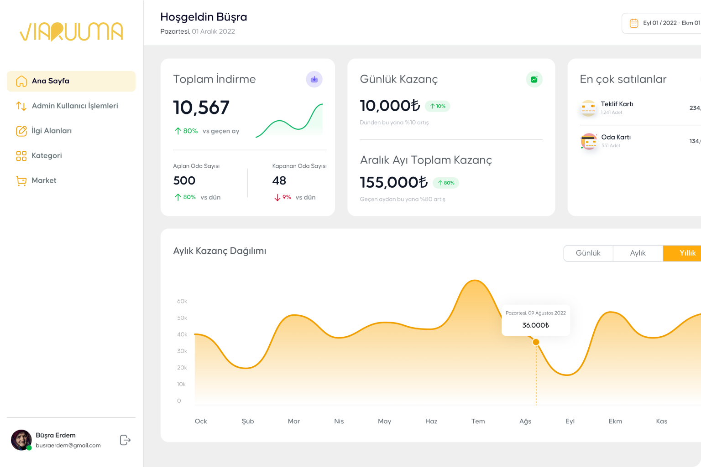
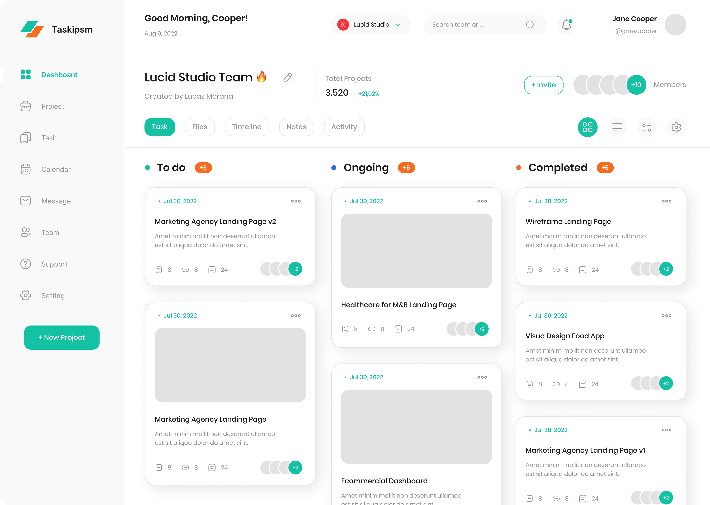
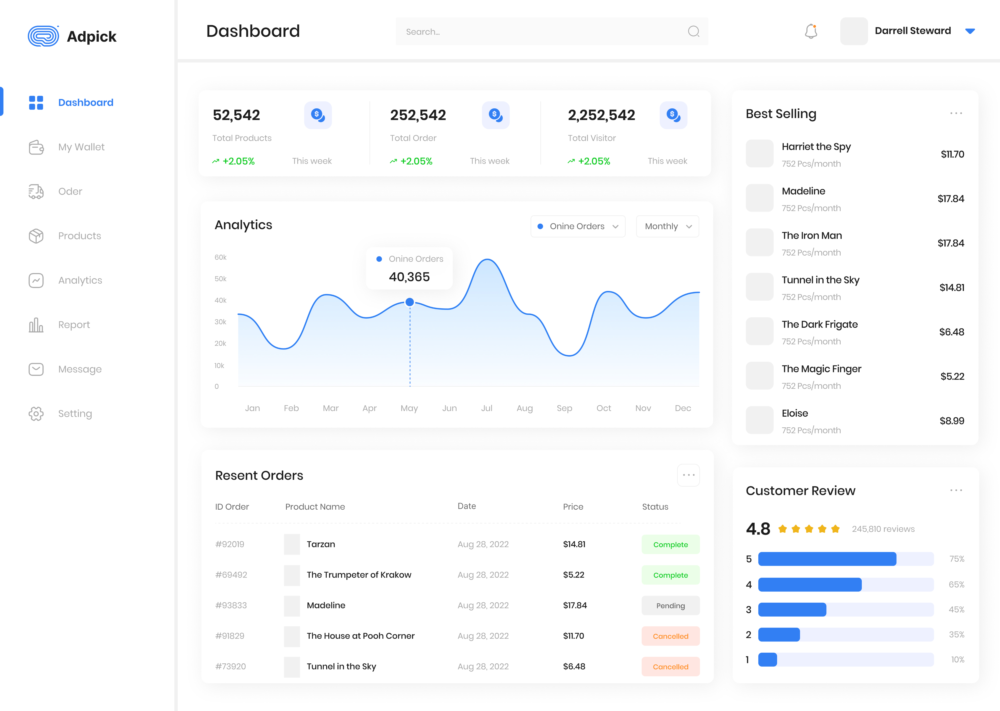

Tekrarlayan Eylemleri Python RPA ile x3-7 Kat Hızlı Gerçekleştirin
İşletmenizin verimliliğini artırın, iş akışlarınızı optimize edin ve tekrarlayan görevleri otomatikleştirin. Python RPA'nin sunduğu olanaklarla işlerinizi daha hızlı ve akıllıca yapın.
Referanslar
Oluştur
Python RPA, otomasyon projelerinizi geliştirmek için hem kod tabanlı hem de görsel tabanlı yaklaşımlar sunar. Düz Python betikleri kullanarak karmaşık iş akışlarını
...
Python RPA, otomasyon projelerinizi geliştirmek için hem kod tabanlı hem de görsel tabanlı yaklaşımlar sunar. Düz Python betikleri kullanarak karmaşık iş akışlarını kodlayabilir veya düşük kodlu Python RPA Studio'yu kullanarak görsel bir arayüzle otomasyon projelerinizi hızla oluşturabilirsiniz. Bu, kullanıcıların teknik bilgi seviyesine veya tercihlerine bağlı olarak esneklik sağlar. Daha fazla zaman kazanmanıza ve otomasyon projelerini daha hızlı bir şekilde başlatmanıza olanak tanır.
Dağıt
Python RPA, otomasyonlarınızı farklı ortamlarda ve platformlarda dağıtmanıza olanak tanır. Windows sanal makinelerinde (VM'ler), Docker konteynerlerinde
...
Python RPA, otomasyonlarınızı farklı ortamlarda ve platformlarda dağıtmanıza olanak tanır. Windows sanal makinelerinde (VM'ler), Docker konteynerlerinde veya kişisel bilgisayarlarınızda Python RPA Ajanı kullanarak otomasyonları çalıştırabilirsiniz. Bu, iş süreçlerinizi gereksinimlerinize ve altyapınıza uygun şekilde dağıtmanıza olanak tanır. Ayrıca, katılımcı ve katılımcı olmayan otomasyonları etkili bir şekilde yönetmenize yardımcı olur, bu da operasyonlarınızı daha verimli hale getirir.
Yönet
Python RPA Orchestrator, otomasyon projelerinizi merkezi bir konumdan zamanlamak, izlemek, kaydetmek ve güvence altına almak için güçlü bir araçtır.
...
Python RPA Orchestrator, otomasyon projelerinizi merkezi bir konumdan zamanlamak, izlemek, kaydetmek ve güvence altına almak için güçlü bir araçtır. Kod tabanlı veya Stüdyo tabanlı otomasyonlarınızın performansını izlemek ve gerektiğinde müdahale etmek için kapsamlı bir araçtır. Ayrıca, günlük kayıtlarını yöneterek iş süreçlerinizin güvenliğini artırır ve otomasyonlarınızın güvenilirliğini sağlar. Bu, iş akışlarınızı daha iyi yönetmenize ve iş verimliliğinizi artırmanıza yardımcı olur.

Özellikler
Python RPA Studio
Gelişmiş Otomasyon Aracı: Python RPA Studio
Python RPA Studio, no-code/low code bir arayüzle geliştirilmiş, gelişmiş RPA projeleri oluşturmanızı sağlar. İşte Python RPA Studio'nun sunduğu bazı önemli özellikler:
Python desteği: RPA geliştiricileri için yerleşik Python desteği.
Kullanımı kolay: Her aktivite için yerleşik istisna işleme ve ek değişkenler oluşturmadan sonuçları kullanma gibi kolaylık sağlayan özellikler.
No-code/low code aktiviteler: Masaüstü ve tarayıcı otomasyonu, bilgisayar görüşü, SAP GUI entegrasyonu, e-posta yönetimi, API istekleri ve daha fazlasını içeren bir dizi hazır aktivite.
Veritabanı bağlantıları: MySQL, MS SQL, Postgre SQL, SQL Light gibi popüler veritabanlarıyla entegrasyon.
Dosya işlemleri: Microsoft Excel, Word, Google Sheets, PDF ve diğer dosya türleriyle etkileşim.
Optik Karakter Tanıma (OCR): Metin tabanlı verileri tanıma ve işleme yeteneği.
Mesajlaşma entegrasyonu: Telegram messenger üzerinden mesaj gönderme ve alma.


Python RPA Orkestratörü ile Botlarınızı Yönetin
Python RPA Orkestratörü, botlarınızı merkezi bir yerden yönetmenizi sağlar ve işletmenizin otomasyon süreçlerini daha verimli hale getirir. İşte Python RPA Orkestratörü'nün önemli özellikleri:
Merkezi yönetim: Botlarınızı tek bir konsoldan yönetin, başlatın ve duraklatın.
Otomatik ve manuel işlem: Python projelerini ve Python RPA Studio projelerini hem otomatik hem de manuel olarak başlatın ve duraklatın.
Kapsamlı zamanlama: Botların çalışma zamanlarını dakika bazında detaylı olarak planlayın.
Sürüm yönetimi: RPA projelerinin farklı sürümlerini izleyin ve yönetin.
Şifreleme: Otomatik süreçlerde kullanılan hesap şifrelerini güvenli bir şekilde şifreleyin.
Durum izleme: Botların durumlarını izleyin ve performanslarını değerlendirin.
Günlük yönetimi: Otomatik günlükleme ve günlükleri izleyin.
Uyarılar: Farklı olaylar (örneğin, bir bot hatası) meydana geldiğinde Telegram mesajlaşma uygulaması üzerinden anında uyarı alın.
Dağıtım ve güncelleme: Botları ve güncellemeleri hedef sunuculara otomatik olarak dağıtın.
Kullanıcı yönetimi: Farklı kullanıcı hesapları oluşturun ve erişim haklarını yönetin.
Güvenilirlik: Ubuntu OS veya Windows Subsystem for Linux üzerinde çalışma, PostgreSQL veritabanı kullanma.
Çok kiracılık: Kullanıcı erişimini sanal makineler bazında yönetin.
Sıkça Sorulan Sorular
RPA hangi şirketlerin ihtiyaçlarını karşılar?
Büyük, küçük ölçekli olmak üzere otomasyon ihtiyacı olan tüm şirketlerin ihtiyaçlarını karşılar. Kullanan departmanlar genellikle; İnsan kaynakları, finans/muhasebe, müşteri hizmetleri, bilgi teknolojileri, depo/mağaza, üretim işletmeleri, lojistik gibi insanlar arası departmanların kullanımı için uygundur.
RPA şirket maliyetlerini ne ölçüde optimize eder?
RPA'nın şirket maliyetlerini ne kadar optimize ettiği, otomatikleştirilecek işlemlerin doğası ve miktarına bağlıdır. RPA’nın yatırım getirisi genellikle 6 aydan daha az sürede görülür. Bazı işgücü yoğun süreçler, 3 aydan daha az sürede yatırım getirisini artıra geçirir.
RPA'nın uygulanması ne kadar sürer?
Bu, otomatikleştirilecek süreç sayısına ve önceki RPA deneyimine bağlıdır. Ortalama olarak, bir sürecin otomatikleştirilmesi yaklaşık XX hafta sürer. Daha fazla sürecin otomatikleştirilmesi daha fazla zaman gerektirebilir. RPA ile ilk projenizi yapıyorsunuz bu süre uzayabilir.
Sistem nasıl bakım gerektirir?
Yes, you can try us for free for 30 days. If you want,
Python RPA robotları genellikle bakım gerektirmez. 24/7, yılın 365 günü çalışır. Ancak, robotun etkileşimde bulunduğu sistemlerde değişiklikler olduğunda robotu değiştirmek gerekebilir. Geçerli bir lisans altında, robotun algoritmasını istediğiniz zaman değiştirerek gerekli işlevselliği ekleyebilirsiniz.
Başlangıçta uygulanmaya başlanacak en iyi süreçler nelerdir?
Basit süreçlerle başlayın, bu kısa bir süre içinde hızlı sonuçlar sağlayacaktır. Belgelerin taranması ve tanınmasıyla ilgili süreçlerle başlamak önerilmez, çünkü bunlar önemli ölçüde daha karmaşıktır.
RPA geliştiricilerinin yetkinlikleri neler olmalıdır?
Robotlar oluşturmak için tek ihtiyacınız olan analitik bir zihin ve hızlı bir tasarım derslerini kavrama yeteneğidir. Programlama becerilerine gerek yoktur. Sık sık müşterilerimiz RPA pozisyonları için üniversite mezunları veya lisans öğrencilerini işe alırlar.